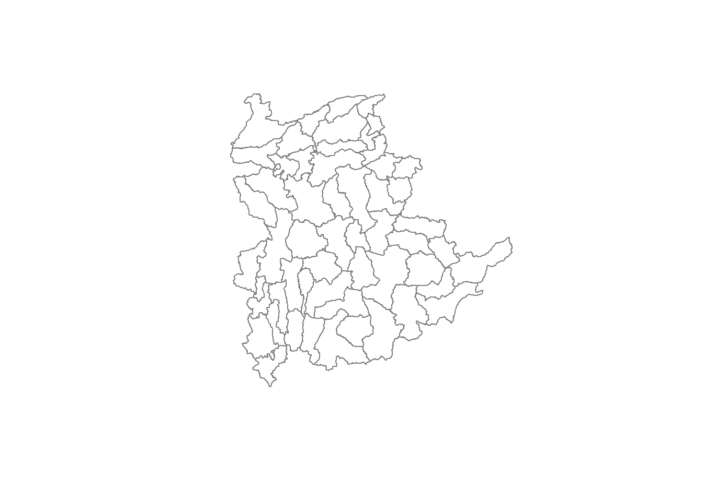
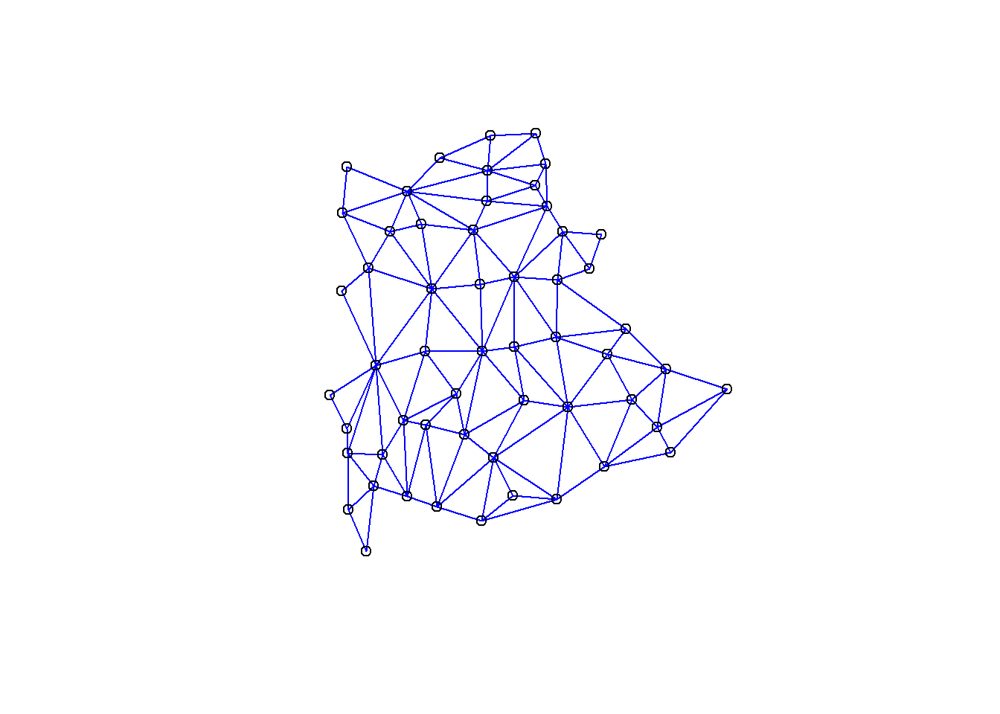
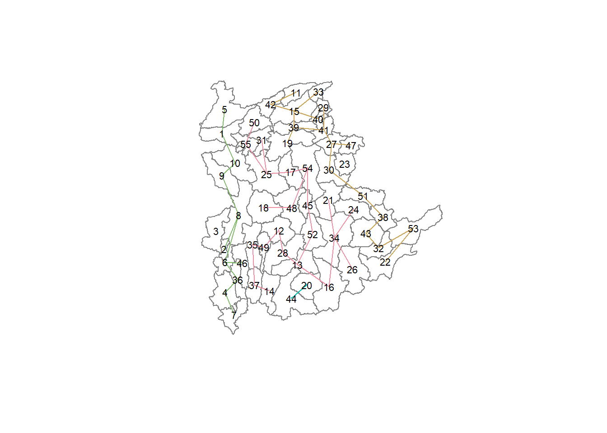
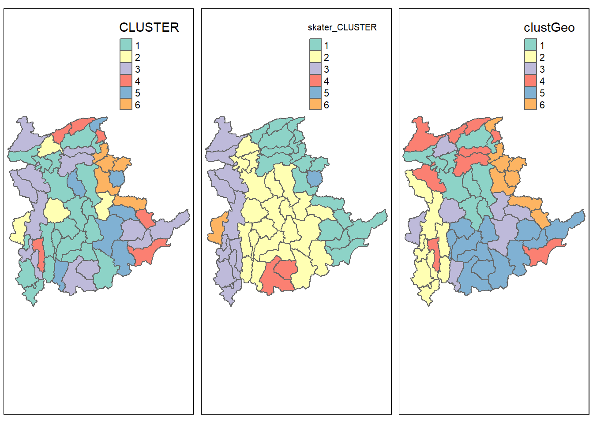
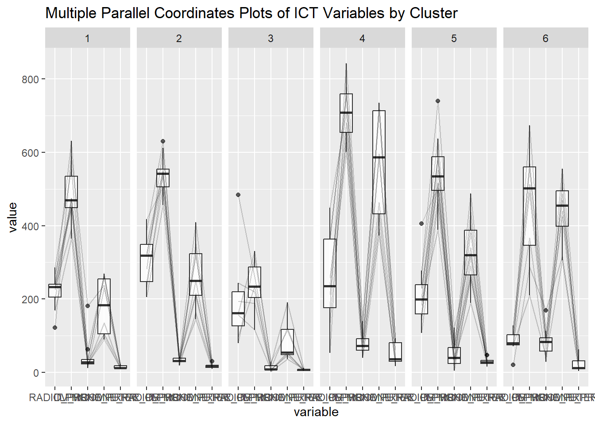

pacman::p_load(spdep, sp, tmap, sf, ClustGeo,
cluster, factoextra, NbClust,
tidyverse, GGally)In-Class Exercise 07
Some learning from last lesson: Look deeply into the data and is there assuptions or outliers (e.g. more data due to higher population), and how to counter these to ensure a more interesting analysis? (i.e. take data per capita, to find out the true distribution of data, not affected by poplation size) Stadardisation techniques can also be used, depending on context. (z-score, min-max, decimal-scaling)
No linear relationship != no relationship
Below is In-Class Ex09
1.0 Installing and Loading the R Packages
Install the following packages:
- spdep
- sp
- tmap
- sf
- ClustGeo
- cluster
- factoextra
- NbClust
- tidyverse
- GGally
2.0 Preparing the Data
- Import the relevant data (intermediate data derived from Hands-On).
shan_sf <- read_rds("data/rds/shan_sf.rds")
shan_ict <- read_rds("data/rds/shan_ict.rds")
shan_sf_cluster <- read_rds("data/rds/shan_sf_cluster.rds")3.0 Conventional Hierarchical Clustering
3.1 Hierarchical Clustering
proxmat <- dist(shan_ict, method = 'euclidean')
#able to have the option to select certain columns/variables in the data
#do print(proxmat) in the console to see the output // for checking purpose
hclust_ward <- hclust(proxmat, method = 'ward.D')
#hclust_ward is an hclust object // check with class(hclust_wards)
groups <- as.factor(cutree(hclust_ward, k=6))
#for clustering always min 33.2 Append to the geospatial data
shan_sf_cluster <- cbind(shan_sf,
as.matrix(groups)) %>%
rename(`CLUSTER` = `as.matrix.groups.`) %>% #use ` not ' is there any reason? // the . is very impt
select(-c(3:4, 7:9)) %>%
rename(TS = TS.x)3.3 The dendrogram
plot(hclust_ward, cex = 0.6)
rect.hclust(hclust_ward, k = 6, border = 2:5)
3.4 Cluster map
qtm(shan_sf_cluster, "CLUSTER")
#R only has 16 colours on default, beyond that we have to manually create a new colour4.0 Spatially Contrained Clustering: SKATER method
SKATER (Spatial ’K”luster Analysis by Tree Edge Removal algorithm) -> get minimum spanning tree
4.1 Step 1: Computing nearest neighbours
shan.nb <- poly2nb(shan_sf)
summary(shan.nb)Neighbour list object:
Number of regions: 55
Number of nonzero links: 264
Percentage nonzero weights: 8.727273
Average number of links: 4.8
Link number distribution:
2 3 4 5 6 7 8 9
5 9 7 21 4 3 5 1
5 least connected regions:
3 5 7 9 47 with 2 links
1 most connected region:
8 with 9 links4.2 Step 2: Visualising the neighbours
plot(st_geometry(shan_sf),
border=grey(.5))
pts <- st_coordinates((st_centroid(shan_sf)))
plot(shan.nb,
pts,
col="blue",
ass=TRUE)
4.3 Step 3: Computing minimum spanning tree
4.3.1 Calculate edge costs
lcosts <- nbcosts(shan.nb, shan_ict)4.3.2 Incorporating theses costs into a weights object
shan.w <- nb2listw(shan.nb,
lcosts,
style = "B") #hardcode the binary // not everything allow user to change
summary(shan.w)Characteristics of weights list object:
Neighbour list object:
Number of regions: 55
Number of nonzero links: 264
Percentage nonzero weights: 8.727273
Average number of links: 4.8
Link number distribution:
2 3 4 5 6 7 8 9
5 9 7 21 4 3 5 1
5 least connected regions:
3 5 7 9 47 with 2 links
1 most connected region:
8 with 9 links
Weights style: B
Weights constants summary:
n nn S0 S1 S2
B 55 3025 76267.65 58260785 5220160044.3.3 Computing MST
shan.mst <- mstree(shan.w)4.3.4 Visualising MST
plot(st_geometry(shan_sf),
border=gray(.5))
plot.mst(shan.mst,
pts,
col="blue",
cex.lab=0.7,
cex.circles=0.005,
add=TRUE)
4.4 Getting the skater tree
skater.clust6 <- skater(edges = shan.mst[,1:2],
data = shan_ict,
method = "euclidean",
ncuts = 5) #note that n is 5 for cluster 6
#this is because the code start from 0 (we can do n-1 where n is the user input to not confuse the user)Plot the SKATER Tree
plot(st_geometry(shan_sf), #for outline using st_geometry would be good
border=gray(.5))
plot(skater.clust6,
pts,
cex.lab=.7,
groups.colours=c("red","green","blue","brown","pink"),
cex.circles=0.005,
add=TRUE) #this line means plot this part of the code over the previous code (the outline)
4.5 Visualising the clusters in choropleth map
groups_mat <- as.matrix(skater.clust6$groups)
shan_sf_spatialcluster <- cbind(shan_sf_cluster, as.factor(groups_mat)) %>% #as.factor organise it ascending from 1 to 6
rename(`skater_CLUSTER` = `as.factor.groups_mat.`)
qtm(shan_sf_spatialcluster, "skater_CLUSTER")
5.0 Spatially Contrained Clustering: ClustGeo method
5.1 Computing spatial distance matrix
In the code chunk below, st_distance() of sf package is used to compute the distance matrix
dist <- st_distance(shan_sf, shan_sf)
distmat <- as.dist(dist)5.2 The cluster graphs
cr <- choicealpha(proxmat, distmat,
range.alpha = seq(0, 1, 0.1),
K=6, graph = TRUE)

Note: Output 2 graphs: one absoulte and one standardised. We are usually more interest in the graph with the absolute value.
5.3 Saving clustGeo output
clustG <- hclustgeo(proxmat, distmat, alpha = 0.2)
groups <- as.factor(cutree(clustG, k=6))
shan_sf_clustGeo <- cbind(shan_sf,
as.matrix(groups)) %>%
rename(`clustGeo` = `as.matrix.groups.`)5.4 Visualising the clustGeo map
qtm(shan_sf_clustGeo, "clustGeo")
6.0 Comparing cluster maps
tmap_mode("plot")
map1 <- qtm(shan_sf_cluster, "CLUSTER")
map2 <- qtm(shan_sf_spatialcluster, "skater_CLUSTER")
map3 <- qtm(shan_sf_clustGeo, "clustGeo")
tmap_arrange(map1, map2, map3, ncol = 3)
Note: Method (SKATER or clustGeo) to use depends Clustering is multi-variate analysis, compared to single-variate analysis of LISA and G* I of Take-Home 2
7.0 Characterising the clusters
ggparcoord(data = shan_sf_clustGeo,
columns = c(17:21),
scale = "globalminmax",
alphaLines = 0.2,
boxplot = TRUE,
title = "Multiple Parallel Coordinates Plots of ICT Variables by Cluster") +
facet_grid(~ clustGeo) +
theme(axis.test.x = element_text(angle = 30))